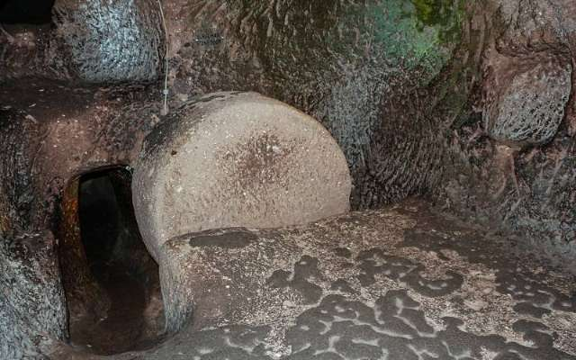

Startseite › Sehenswürdigkeiten nach Provinzen › Nevşehir
Der Kültür-Varlıkları-Führer verzeichnet 20 Orte in Nevşehir: 5 ausgrabungsstätte, 5 unterirdische stadt, 5 museum, 3 sakralbau, 2 burg & historisches bauwerk. Unten finden Sie die Höhepunkte, eine Karte und die vollständige Liste.
⭐ Höhepunkte

1 · Nevşehir · AusgrabungsstätteAusgrabungsstätte Göreme
Das Freilichtmuseum Göreme im Herzen Kappadokiens ist eine einzigartige Gruppe von Felskirchen, Kapellen und Klosterbauten im weichen Vulkantuff.

2 · Nevşehir · AusgrabungsstätteZelve und Paşabağ
Zelve und Paşabağları bieten die eindrucksvollsten Feenkamine Kappadokiens.

3 · Nevşehir · AusgrabungsstätteÇavuşin: Ausgrabungsstätte und Kirche
Çavuşin zwischen Göreme und Avanos ist ein altes Dorf mit Felshäusern; darüber liegt die Johannes-der-Täufer-Kirche, eine der ältesten Kappadokiens.
🗺 Auf der Karte
📍 Alle Orte (20)
Ausgrabungsstätte (5)
Ausgrabungsstätte GöremeAusgrabungsstätte · UNESCOZelve und PaşabağAusgrabungsstätte · UNESCOÇavuşin: Ausgrabungsstätte und KircheAusgrabungsstätte · UNESCO Sobesos Antik Kenti (Şahinefendi)AusgrabungsstätteAusgrabungsstätte SobessosAusgrabungsstätte
Sobesos Antik Kenti (Şahinefendi)AusgrabungsstätteAusgrabungsstätte SobessosAusgrabungsstätteUnterirdische Stadt (5)
 Unterirdische Stadt DerinkuyuUnterirdische Stadt · UNESCO
Unterirdische Stadt DerinkuyuUnterirdische Stadt · UNESCO Unterirdische Stadt KaymaklıUnterirdische Stadt · UNESCO
Unterirdische Stadt KaymaklıUnterirdische Stadt · UNESCO Unterirdische Stadt TatlarinUnterirdische Stadt
Unterirdische Stadt TatlarinUnterirdische Stadt
Unterirdische Stadt ÖzkonakUnterirdische StadtUnterirdische Stadt MazıUnterirdische StadtMuseum (5)
 Museum HacıbektaşMuseum
Museum HacıbektaşMuseum Museum NevşehirMuseum
Museum NevşehirMuseum Museum ÜrgüpMuseumNevşehir Hacıbektaş Arkeoloji ve Etnografya MüzesiMuseumAtatürk-Haus-Museum Nevşehir HacıbektaşMuseum
Museum ÜrgüpMuseumNevşehir Hacıbektaş Arkeoloji ve Etnografya MüzesiMuseumAtatürk-Haus-Museum Nevşehir HacıbektaşMuseumSakralbau (3)
 El Nazar-KircheSakralbau · UNESCO
El Nazar-KircheSakralbau · UNESCO Karanlık Kilise (Göreme)Sakralbau · UNESCO
Karanlık Kilise (Göreme)Sakralbau · UNESCO Gülşehir-St.Jean-KircheSakralbau
Gülşehir-St.Jean-KircheSakralbau